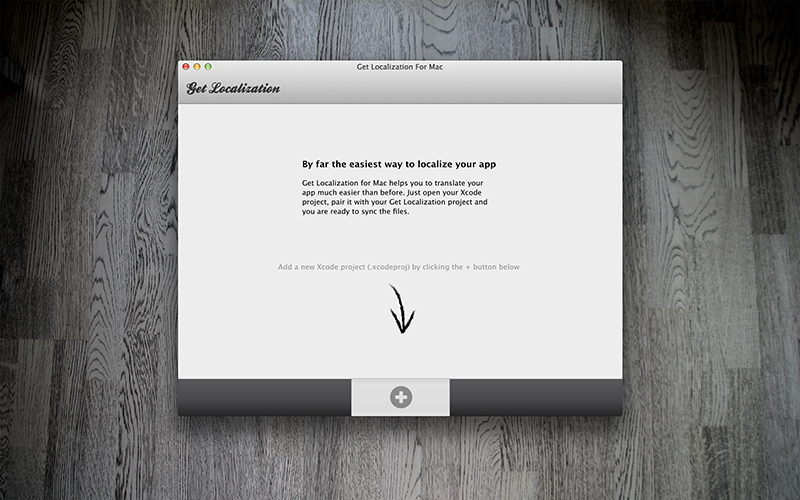
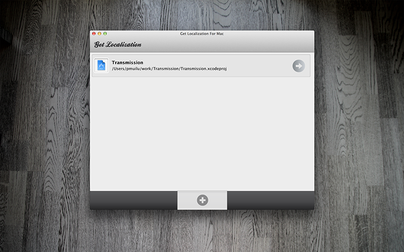

Welcome to Get Localization for Mac
Get Localization for Mac is by far the simplest way to localize your iOS and Mac OS X apps that have been developed using Xcode. It manages all the files and it generates the strings files from your Objective-C and XIB files and updates them. It also syncs them between Get Localization and your Xcode project. Just select your .xcodeproj file, log-in and select the project where you wish to sync your strings files and you are ready to go.
You can download the Mac installer here.
Get Localization for Mac v0.91.2 (.pkg)
Getting started
Visit the user manual for more information
Learn more about Get Localization
Screenshots
 
Known limitations
- Old style lproj names e.g. English.lproj are not supported.
- Currently only English is supported as a master language i.e. en.lproj is required
- We have tested with many Xcode projects but it's likely that we are not yet compatible with every file and folder structure built inside Xcode. We would love to receive your .xcodeproj folder content (.pbxproj file) in case you have any troubles.
- Currently doesn't provide much options for customization or configuration. Our goal is to keep required configuration at minimum but let us know if you would like to configure or customize something.